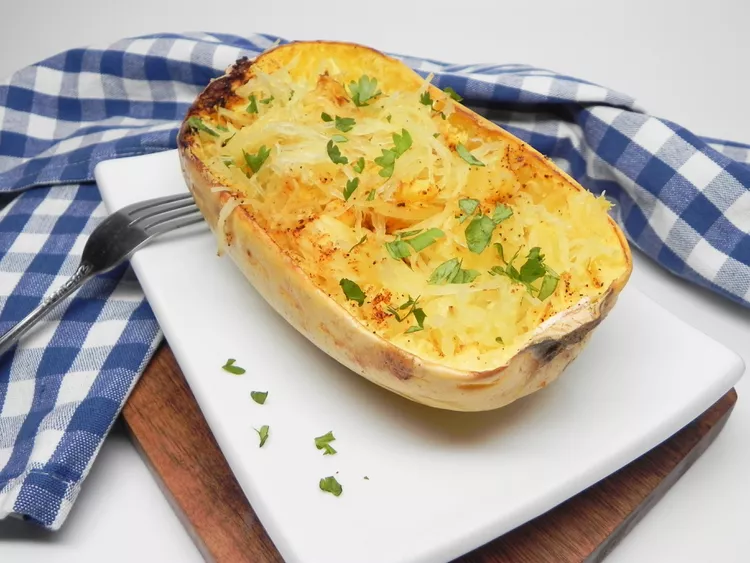

Delicious Pumpkin Bake

Description
This is the easiest and fastest way I have found to cook a spaghetti squash. Cutting them in half was intimidating for me until I discovered the microwave trick, which makes cutting them in half a breeze.
Ingredients
- 1 (3 pound) spaghetti squash
- 1 teaspoon olive oil
- ¼ teaspoon sea salt
- ⅛ teaspoon ground black pepper
- ⅛ teaspoon smoked paprika
Directions
- Using a sharp knife, make a dotted line lengthwise around the entire squash. Place whole squash in the microwave and cook on full power for 5 minutes. Transfer to a cutting board and cut the squash in half lengthwise, using the dotted line as a guide. Wrap one half in plastic wrap and refrigerate for another use.
- Spoon pulp and seeds out of remaining half and discard. Brush olive oil over all of the flesh and sprinkle with salt, pepper, and paprika.
- Preheat an air fryer to 360 degrees F (180 degrees C). Place spaghetti squash half skin side-down in the basket. Cook for 20 minutes.
- Transfer to a dish and fluff with a fork to create 'noodles'.